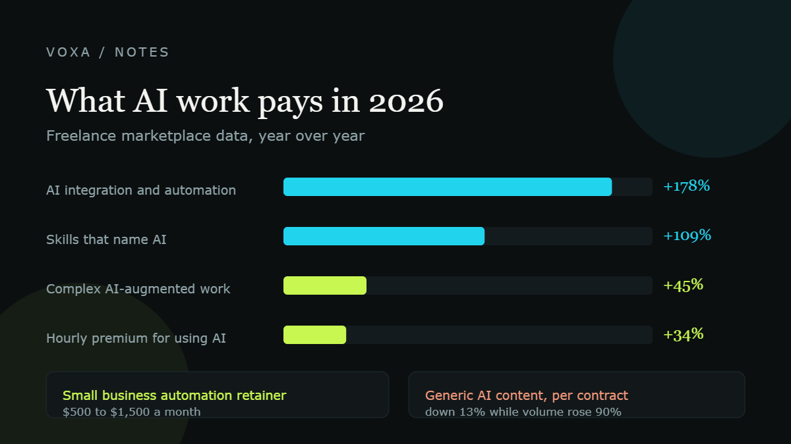

How people abroad actually make money with AI (rates, not hype)

Quick answer
The people earning well are not selling AI content. They are wiring AI into someone else's business. Demand for AI skills on Upwork grew 109% in a year, freelancers who use AI earn roughly 34% to 40% more per hour, and an automation retainer for a small business runs $500 to $1,500 a month. Meanwhile generic AI content and video is getting crowded: volume up 90%, earnings per contract down 13%.
Key numbers
- Demand for skills naming AI on Upwork: up 109% year over year
- AI-enabled freelancers earn roughly 34% to 40% more per hour
- Fastest-growing skills: AI video and editing +329%, AI integration +178%, AI data annotation +154%
- Generic AI creative production: contract starts up 90%, earnings per contract down 13%
- Typical small business automation retainer: $500 to $1,500 a month
- Senior AI or machine learning freelance work: $100 to $300 an hour
What the market actually pays
Start with the boring numbers. The average freelance rate on Upwork sits around $39 an hour, somewhere between $29 and $54. That is the all-skills average, and it is the wrong number to compare yourself against if you do specialist work, because senior AI and machine learning work goes for $100 to $300 an hour.
The premium for using AI at all is roughly 34% to 40% per hour, measured across the marketplace. Demand for skills that explicitly mention AI grew 109% year over year, against 23% for other in-demand skills. The fastest-growing categories in 2026 were AI video and editing at 329%, AI integration at 178%, AI data annotation at 154%, and chatbot development at 71%.
Notice what is not on that list. Writing prompts. Asking ChatGPT to write your blog. Those are now baseline skills, not a service.
Where the real money is: implementation
The money moved to the person who can connect the tools. Upwork reported that AI strategy and consulting work grew more than 50% year over year, and that AI-related work on the platform runs at roughly $330 million a year. Freelancers doing complex, AI-augmented professional work saw earnings rise 45%. The ones doing simple AI tasks did not.
This is also why the agency model took off abroad. Published pricing for AI automation agencies in 2026 looks like this.
| What they sell | Typical price |
|---|---|
| Setup project, small business | $1,500 to $5,000 one off |
| Setup project, mid-market | $5,000 to $20,000 one off |
| Monthly retainer, small business | $500 to $1,500 |
| Monthly retainer, mid-market | $1,500 to $4,000 |
| Productised package | $1,800 to $4,500 a month |
| Senior AI or ML freelancer | $100 to $300 an hour |
A typical published engagement: $12,000 to build, $1,500 a month to keep it running and tuned, with a target of 70% of inbound leads handled without a person touching them. That is the shape of the work. Not clever. Just useful.
What got cheaper instead of richer
Generative AI content and video production saw contract starts rise 90% while earnings per contract fell 13%. More people are offering the same easy deliverable, so the price falls. If your entire pitch is that you can make AI videos, you are competing with everyone who watched the same video you did.
The same pattern shows up in the data on juniors: entry-level AI execution work is where the supply is thickest and the judgement is thinnest.
The three routes that hold up
One: a freelancer who automates one process for many clients. Same workflow, twenty times, at $500 to $1,500 a month each. Boring, repeatable, and it compounds.
Two: a small business owner who uses AI to take more work without hiring. The US Chamber case studies include an apparel brand running partnerships with lululemon and the Denver Broncos on a lean team, and a peer-to-peer car rental company operating around the clock with a handful of people, both using tools built into Shopify and QuickBooks.
Three: an expert in an unglamorous field who applies AI inside it. Accounting, clinics, property management, legal admin. AI-augmented professional services grew 72% in volume with earnings up 22%, because the domain knowledge is the scarce part.
What this does not mean
It does not mean you will make $10,000 a month by next quarter. The average rate is still in the thirties. The people at the top of that range have a specific skill, a client list, and results they can point to.
What it does mean is that the gap between people using AI on real work and people watching videos about AI is now measurable in money. Pick a process a business already pays for, automate it properly, and charge less than the person doing it by hand.
Where these numbers come from
Plain links to the original sources, so you can check every figure yourself. We do not take sponsorships and we do not get paid for these links.
- Upwork: In-Demand Skills 2026 (AI skills demand up 109%)
- Upwork: Future Workforce Index 2026 (hourly premium for AI work, contract earnings)
- Upwork: high-demand careers and skills 2026
- Taskip: published AI automation agency pricing for 2026
- Ciela AI: freelance AI automation rates 2026, based on Upwork data
- US Chamber of Commerce: AI is transforming small business, a Colorado success story
Common questions
Can you make money with AI without coding?
Yes, but not from prompting alone. The no-code routes are automations built in Zapier, Make or n8n, content editing with a real point of view, and running AI tools for businesses that do not want to learn them. Rates for this work are lower than engineering work but far above generic content writing.
What is an AI automation agency and what does it charge?
A small service business that builds automations for clients and maintains them. Published 2026 pricing is usually $1,500 to $5,000 for a small business build, plus $500 to $1,500 a month to keep it running.
Is selling AI-generated content still worth it?
Barely, at the bottom of the market. Contract volume for AI creative production rose 90% while earnings per contract fell 13%. If you sell content, sell editing and judgement, not generation.
How do people find their first automation clients?
Usually inside the industry they already worked in. The first three clients are almost always businesses where the person already knows the process and the jargon, which is why domain knowledge keeps beating tool knowledge.